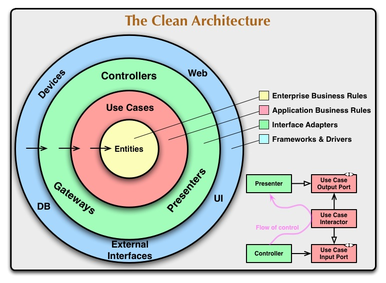

中小型 Go 语言项目应该如何布局？
每个工程师来到新环境，大概率需要从维护老项目开始切入，逐渐熟悉公司的技术栈和效率工具。这时候，老项目的一些习惯，如命名、布局、错误处理等等，不论好坏，都会不自觉地影响新人，形成路径依赖。在这个过程中，如果没有人主动去思考为什么，这些习惯也将被无理由地继承下去。

本文想讨论的就是 Go 的项目布局。这份布局指南并非原创，其主体内容来源于 Ben Johnson 在 2016 年写的文章 Standard Package Layout，阅读它和阅读本文的效果可以认为是等同的。我们研发小组已经在大大小小数十个项目上实践超过一年的时间，通过经验证实它确实能够解决我们平时在编码过程中的两大常见问题：
-
因循环依赖修改代码结构
-
无法优雅地构建单元测试
⚠️ 注意，本指南并非我司内部通用的规范，因此也不能代表伴鱼服务端团队的项目布局方案。
如果你了解过 Uncle Bob 的博客 The Clean Architecture 或者他的书 Clean Code，你可以将这篇指南提出的布局结构理解为 Clean Architecture 适配到中小型 go 语言项目上的一种方案，对于大型项目可以考虑更复杂的 evrone/go-clean-template、golang-standards/project-layout。
有缺陷的布局方案
在正式介绍最佳实践之前，我们有必要先了解常见的有缺陷的布局方案。这些布局方案常常是许多工程师从其它编程语言社区迁徙过来时夹带的习惯，也算是一种文化交融的产物。需要说明的是：它们的缺陷是针对 Go 语言环境而言，在其原生语言中并不一定存在。
扁平式布局
扁平式布局就是把项目的所有文件放在同一个 package 内部。这种方案的优势就是简单，永远不存在循环依赖，常见于一些小微型项目或者一次性脚本中。在公司内部的一些早期项目中就存在扁平式布局的身影，比如：
.
├── Dockerfile
├── docker
├── go.mod
├── go.sum
├── logic
│ ├── config.go
│ ├── dbitem.go
│ └── logic.go
└── main.go
所有代码逻辑都放在一个拍平的 logic 文件夹中。这种布局方案的缺陷也很明显：当项目规模变大时，单个文件内代码量变大，文件之间形成网状依赖，可维护性将呈指数趋势下降，甚至对于 IDE 来说也是不小的挑战。
Rails 布局
Rails 风格的布局方案将项目按照功能拆分，比如将 controller，service，model，cache， config 分别放到不同的 package 中。这种方案我们也曾在项目中使用过，比如：
.
├── Dockerfile
├── common
│ └── env.go
├── controller
│ ├── httpcontroller
│ └── thriftcontroller
├── go.mod
├── go.sum
├── main.go
├── model
│ ├── dao
│ ├── daoimpl
│ ├── domain
│ ├── error.go
│ └── model.go
├── pkg
│ ├── cache
│ └── config
└── router
├── httprouter
└── thriftrouter
这种方案最大的问题在于功能之间容易产生循环依赖。比如 cache 和 config 之间、service 和 cache 之间、config 和 service 之间都可能存在相互依赖的情况。
业务单元布局
在企业管理中，有的公司会把组织架构按照职能划分成人力行政、设计、产品、研发、市场、财务等部门，而有的公司则会先按照业务划分成不同的业务单元 (Business Unit)，然后在每个业务单元内部再划分出各自的职能部门。如果说前者对应的是 Rails 布局，那么后者就是业务单元布局。
由于在每个业务单元中采用的是 Rails 布局，这种方案天然地就继承了 Rails 布局的缺陷。除此之外，这种方案还有一个潜在问题：同名不同义。假设有 crawler 和 search engine 两个业务单元，它们都有一个 model package，crawler 和 search engine 的 model package 可能恰好都包含 WebPage 这个数据结构，由于 Go 语言在引用其它 package 的时候只会带上最后一个文件夹的名称，即 package 名称，两个业务单元中就可能存在同名结构体 model.WebPage。对于工程师来说，在一个项目中同名结构体存在两种含义是额外的思考负担。
理想的布局方案
理想的布局方案应该满足哪些要求？我认为至少有以下几点：
- 易上手、可维护、可扩展
- 避免循环依赖
- 方便构建单元测试
根据 Ben Johnson 的方案以及公司内部的基础设施特点，我们团队提出了一个改良版的布局方案，可以用四句话概括：
-
将领域类型放在名为 domain 的 package 中
-
按照依赖关系组织不同的 package
-
利用每个 package 的 init 函数注入依赖
-
使用共享的 mock package
这里以一个内部项目 — 业务流程管理 (Business Process Management, BPM) 为例，分别介绍这 4 句话。
1. 将领域类型放在名为 domain 的 package 中
每个应用所属的领域都会有自己的概念和过程，通常它们被统称为领域知识 (domain knowledge)。比如，一个电子商务应用可能包含的概念有顾客、账号、信用卡、库存、物流单等等，可能包含的过程有下单、付款、发货、退货、退款等等；一个社交网络应用可能包含的概念有用户、关注关系、文章、相册、活动等等，可能包含的过程有关注、发布、赞、踩、参与活动等等。领域知识本身与具体的实现无关。
BPM 负责管理业务流程，其领域中包含的一个核心概念是工作流 (workflow)，以 workflow 为例，我们可以在 domain package 中定义它的数据结构：
// domain/workflow.go
type Workflow struct {
ID int64 `json:"id" bdb:"id"`
Name string `json:"name" bdb:"name"`
Version int64 `json:"version" bdb:"version"`
ProjectID int64 `json:"project_id" bdb:"project_id"`
ProjectName string `json:"project_name" bdb:"project_name"`
DeployStatus bpm.WorkflowDeployStatus `json:"deploy_status" bdb:"deploy_status"`
XMLUri string `json:"xml_uri" bdb:"xml_uri"`
CreatedBy string `json:"created_by" bdb:"created_by"`
UpdatedBy string `json:"updated_by" bdb:"updated_by"`
CreatedAt time.Time `json:"created_at" bdb:"created_at"`
UpdatedAt time.Time `json:"updated_at" bdb:"updated_at"`
}
在 BPM 中，管理员应该可以对工作流执行增、删、改、查，即下面的过程：
// domain/workflow.go
type WorkflowService interface {
Add(ctx context.Context, workflow *Workflow) (lastInsertID int64, err error)
Get(ctx context.Context, where map[string]interface{}) (workflow *Workflow, err error)
Set(ctx context.Context, workflow *Workflow) (rowsAffected int64, err error)
Del(ctx context.Context, where map[string]interface{}) (rowsAffected int64, err error)
List(ctx context.Context, where map[string]interface{}) (workflows []*Workflow, total int64, err error)
}
我们定义了领域中的概念和行为，而不引入它们的具体实现。关于 domain 应该放什么内容，一个很重要的判断规则是：
💡 domain 中的任何内容既不依赖项目中的其它任何 package，也不依赖外部服务或中间件
从下文中，你将理解 domain 是所有其它 package 互相依赖的支点，这么做的一大好处就是彻底消除循环依赖。为了方便理解上下文，我们接着在 domain 中定义两个行为：
// domain/xml_storage_service.go
type XMLStorageService struct {
UploadXML(ctx context.Context, data []byte) (uri string, err error)
LoadXML(ctx context.Context, uri string) (data []byte, err error)
}
// domain/db_manager.go
type DBManager interface {
Begin(ctx context.Context) (*manager.Tx, error)
GetDB(ctx context.Context) (*manager.DB, error)
}
其中，XMLStorageService 负责存储和读取 xml 格式的文件，DBManager 负责管理数据库连接。这里敏锐的你可能会有这样的疑问：
🙋🏻 你刚刚不是说 domain 里只包含领域知识吗？怎么还有数据存取相关的内容？
是的，其实我们不仅会在 domain 中放入业务领域知识，也会放入技术领域知识，因为究其本质，domain 的独特性是因其支点地位而存在的，它的存在实际上是为了更合理的项目布局。
2. 按照依赖关系组织不同的 package
既然 domain package 没有任何外部依赖，那些过程的实现就应该被推入其它 package 中，这些 package 将作为领域过程的适配器。
假设 WorflowService 背后的持久化存储是 MySQL，我们就可以引入一个 mysql package，后者负责实现 WorkflowService 的行为：
// mysql/workflow.go
package mysql
import (/*...*/)
type WorkflowService struct {
db *sql.DB
}
func (m *WorkflowService) Add(ctx context.Context, wf *domain.Workflow) (lastInsertID int64, err error) {/*...*/}
// ...
由于每个 workflow 的详细配置信息存放在一个独立的 xml 文件中，它不会被存放在关系型数据库中，因此 WorkflowService 还需要依赖 XMLStorageService：
// mysql/workflow.go
type WorkflowService struct {
db *sql.DB
xmlStorageService domain.XMLStorageService
}
那 XMLStorageService 怎么实现呢？如果是存在对象存储服务 (OSS) 中，是放在阿里云还是 AWS？这些问题 mysql package 并不关心，也无需关心。
如果有一天我们想为 workflow 元数据 (非配置数据) 换一个持久化存储，比如 MongoDB，BoltDB，就可以类似地再引入一个 mongo package 或者 bolt package。
此外，我们还可以利用这种方式引入 package 之间的依赖关系。假如你想在 MySQL 前面添加一个缓存层，那么可以新增另一个 memory package，后者以 MySQL 为持久化存储，在内存中基于 LRU 实现缓存逻辑：
// memory/user.go
package memory
import (/**/)
type WorkflowCache struct {
cache map[int]*domain.Workflow
service domain.WorkflowService
}
func (m *WorkflowCache) Add(ctx context.Context, wf *domain.Workflow) (lastInsertID int64, err error) {/*...*/}
//...
理解的关键点在于：
- 其它 package 都是 domain package 的适配器
- 其它 package 之间的依赖都以 domain package 为支点中转
这样就能有效地消除 package 之间的循环依赖。我们也可以从 Go 的标准库中看到这种布局，如：io.Reader 是 io 的领域知识，tar.Reader、gzip.Reader 以及 multipart.Reader 这些都是 io.Reader 的实现，同时这些实现之间也存在依赖关系，我们会看到 os.File 被包裹在 bufio.Reader 中、bufio.Reader 被包裹在 gzip.Reader 中、gzip.Reader 被包裹在 tar.Reader 中。
Package 间的依赖关系
package 之间不仅只存在线性的层次依赖，即 A 依赖 B、B 依赖 C，还可能存在多重依赖，如 A 依赖 B 和 C，如上文中的 WorkflowService 同时依赖 DBManager 以及 XMLStorageService。其中 XMLStorageService 通过 OSS 来实现。当我们想要更换 XMLStorageService 实现时，无需修改任何 WorkflowService 的实现代码逻辑；当我们想要更换 WorkflowService 实现时，无需修改任何 XMLStorageService 的实现，二者之间的依赖关系仅靠 domain package 定义的领域过程维系，耦合度很低。
事实上，对任意两个 package X 和 Y，它们之间永远不会直接存在依赖关系，而是通过 domain package 实现一种弱依赖关系，这种方案能优雅地管理任何形式的网状依赖。
用 package 控制对标准包的依赖
上述这种技巧并不局限于控制外部依赖，我们也可以用它来控制对标准包的依赖。比如，net/http package 属于标准包，我们也可以在项目中引入 http package，来控制对 net/http 的依赖：
// http/handler.go
package http
import (/*...*/)
type Handler struct {
WorkflowService bpm.WorkflowService
}
func (h *Handler) ServeHTTP(w http.ResponseWriter, r *http.Request) {
// handle request
}
这总做法粗看起来很奇怪，为什么要取一个和标准包一样的名字，如果某个地方需要同时引用 http 和 net/http，岂不是很别扭？实际上这种设计是有意而为之，只要你不允许项目的其它地方引用 net/http，问题就不存在了，而这种限制恰恰能够帮助你从源头上将所有对 net/http 的依赖控制在 http package 中，项目的依赖关系也将变得更加清晰。
3. 利用每个 package 的 init 函数注入依赖
设计好整体布局后，只需要一根线将它们串联起来。这根线就是每个 package 的 init 函数，以 grpc package 中的 init 函数为例：
// grpc/init.go
import (
".../bpm/engine"
".../bpm/notifier"
".../bpm/oss"
".../bpm/rpc"
".../bpm/mysql"
)
var DefaultBPMGrpcHandler *BPMGrpcHandler
func init() {
var workflowCtl = NewWorkflowController(mysql.DefaultWorkflowService, oss.DefaultXMLStorageService)
var workflowInstanceCtl = NewWorkflowInstanceController(mysql.DefaultWorkflowService, mysql.DefaultWorkflowInstanceService)
DefaultBPMGrpcHandler = &BPMGrpcHandler{
workflowCtl: workflowCtl,
workflowInstanceCtl: workflowInstanceCtl,
}
}
4. 使用共享的 mock package
现在，所有的 package 之间都依靠 domain package 中的定义的领域知识和过程作为沟通的桥梁，我们就很容易通过依赖注入的方式实现 mock。
假设我们希望利用本地的数据库来做简单的端到端测试，就可以引入共享的 mock package，在里面实现本地连接逻辑，同样以 WorkflowService 为例，引入 DBManager 的 mock：
// mock/db_manager.go
type DBManager struct {
BeginFn func(ctx context.Context) (*manager.Tx, error)
BeginInvoked bool
GetDBFn func(ctx context.Context) (*manager.DB, error)
GetDBInvoked bool
}
func (m *DBManager) Begin(ctx context.Context) (*manager.Tx, error) {
m.BeginInvoked = true
return m.BeginFn(ctx)
}
func (m *DBManager) GetDB(ctx context.Context) (*manager.DB, error) {
m.GetDBInvoked = true
return m.GetDBFn(ctx)
}
剩下的工作就是在测试时，将数据库本地化的实现注入到 BeginFn 和 GetDBFn 中，然后在初始化测试时将 mock.DBManager 传递给 WorkflowService 即可。不难看出，mock.DBManager 实际上就是 domain.DBManager 的一个具体实现，只不过这个实现专供测试使用。
通过这种方式，你可以精细化地控制每个依赖需要用什么样的实现，拥有对测试的完全控制力。
The Clean Architecture
Uncle Bob 2012 年在自己的博客中提出了下面这个项目结构：

这里每一层具体可以是什么，应该有几层并不重要，重要的是：
- 外层只会依赖内层，内层不会依赖外层
- 越往外层越具体，越易变；越往内层越抽象，越稳固
- 同一层内的不同模块互相不认识对方，通过依赖注入实现同层代码复用
我们可以将本文提出的布局方案理解成 2 层的 Clean Architecture，domain 里的内容对应的就是 Entities 和用于实现依赖注入的 interface 定义；剩下的模块就是外层，外层模块之间的代码复用通过 init 中的依赖注入来实现。所以，你可以将其理解成 Clean Architecture 的最简版，更复杂的版本则可以参考文章开头提到的两个项目： evrone/go-clean-template 和 golang-standards/project-layout。